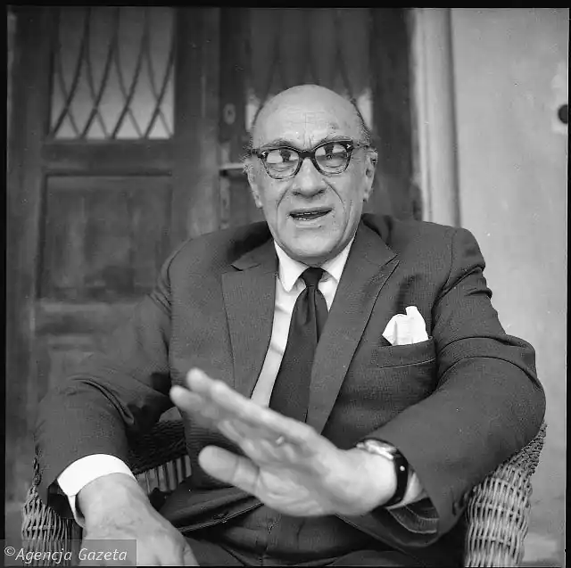

ІВАШКЕВИЧ, Ярослав (Iwaszkiewicz, Jaroslaw — 20.02. 1894, с. Кальник Київс. губернії — 02.03.1980, Стависько, побл. Варшави) — польський письменник.Івашкевич народився в селі Кальник (тепер — Вінницька обл.). Його батько, Болеслав Івашкевич, навчався у Київському університеті (разом з Фадеєм Рильським, батьком М. Рильського), але за участь у польському повстанні 1863 р. був виключений з університету і, відбувши покарання, якийсь час працював домашнім учителем, доки не знайшов скромну посаду бухгалтера цукрового заводу, на якій працював до кінця свого життя.
Батько помер у 1902 році, і велика родина (Ярослав був наймолодшим, а крім нього, в сім'ї було три сестри та брат) залишилася без засобів до існування. Спочатку Івашкевичі перебралися у Варшаву, де мешкали 2 роки (1902— 1904), а потім надовго оселилися у Єлизаветграді (тепер — Кіровоград). Тут Ярослав вступив у гімназію, але в 1909 р. мати перевела його на навчання у Київ. Починаючи з шостого класу, Івашкевич навчався у IV київській гімназії, яку закінчив у 1912 році. У тому ж році він вступив у Київський університет на юридичний факультет. Водночас Івашкевич навчався у музичній школі, а потім — у консерваторії. Коштів не вистачало, і це змушувало його підробляти репетиторством.
У 1918 p., після закінчення університету, Івашкевич приїхав у Варшаву, де відразу потрапив у вир суспільного та культурного життя. Він служив в армії, працював у газеті, водночас активно налагоджував творчі контакти. У 1922 р. одружився і на довгі роки замешкав у передмісті Варшави. Життєві та матеріальні позиції письменника поступово покращувалися. З 1922 до 1924 р. Івашкевич працював секретарем маршалка сейму Ратая, потім спеціальним кореспондентом літературної газети у Парижі, старшим референтом відділу пропаганди польського мистецтва за кордоном, секретарем польського посольства у Копенгагені, Брюсселі. У період з 1925 до 1938 pp. Івашкевич відвідав Австрію, Німеччину, Італію, Швейцарію та Іспанію. Естетична орієнтація письменника формувалася у процесі пошуків та експериментів з різними художніми напрямами. Перші кроки в літературі Івашкевич зробив під впливом "Молодої Польщі". Після приїзду до Варшави він найбільше зблизився із поетичною групою "Скамандр". Творчість Івашкевича міжвоєнного двадцятиліття умовно можна поділити на два періоди — "київський" і "варшавський". Першим твором "київського" періоду творчості і взагалі першим твором Івашкевича стала поема "Молодість пана Твардовського" (1912—1915), побудована на жартівливій грі з різними літературними образами, а другим — повість "Втеча у Багдад" ("Ucieczka do Bagdadu"), яка була написана взимку 1916 р. у Саратові, куди, у зв'язку з війною, на деякий час був евакуйований Київський університет. "Втеча у Багдад" — стилізація під твори письменників "Молодої Польщі". Сюжет твору досить заплутаний і нечіткий, а головне місце у ньому відведено східній екзотиці. У центрі повісті — долі різних людей, які марно намагаються знайти своє щастя. Упродовж 1916—1918 pp. Івашкевич написав також поетичні збірки "Восьмивірші" ("Oktostychy"), "Діонісії" ("Dionizje"), "Kacudu", витримані у модерному дусі, та повісті "Зенобія Пальмура" й "Осінній бенкет", які вийшли друком уже у Варшаві. Кращими творами "варшавського" періоду творчості Івашкевича вважаються поетична збірка "Повернення у Європу" ("Powrot do Europy"), повість "Місяць сходить"("Ksiezyc wschodzi") та роман "Червоні щити"("Czerwone tarcze"). Збірка "Повернення у Європу" вийшла друком у 1931 р. Провідна ідея збірки полягає в утвердженні думки про культурну єдність усіх народів Європи. Івашкевич мріє про братство народів, братство культур усіх європейських країн. У збірці багато віршів про Париж, Брюссель, Італію. Але водночас важливе місце у книзі займають вірші, присвячені Польщі та Україні. Головний герой повісті "Місяць сходить" — молодий поет Антоній, в образі якого багато автобіографічних моментів. Польська критика схильна тлумачити повість як історію літературного народження Івашкевича. У цьому творі, на думку критиків, Івашкевич переборов модернізм, властивий його ранній творчості, і ступив на шлях реалістичного змалювання дійсності. Найвизначнішим твором у творчості Івашкевича міжвоєнного двадцятиліття став його історичний роман "Червоні щити" (1934). Він охоплює кілька десятиліть XII ст. в житті Польщі, Німеччини, Італії, Сициліїта Близького Сходу. Головний герой твору — польський князь Генріх Сандомирський. У польській історії цей князь не залишив якогось значного чи навіть більш-менш помітного сліду. Деякі свідчення про нього збереглися в польських хроніках. Генріх Сандомирський у Івашкевича — це немовби нереалізована можливість призупинення процесу феодальної роздробленості. Генріх прагне стати королем, аби призупинити розпад держави. Його навряд чи можна назвати слабким і нерішучим, але у своїх прагненнях до влади він постає перед серйозною і навіть трагічною етичною дилемою. Посісти трон він може лише за умови вбивства своїх старших братів, які просто так не поступляться своєю владою. Генріх так і не зважується позбавити життя своїх братів. А перед самою смертю він кидає у Віслу корону батька, яку він мріяв одягнути після того, як посяде трон. У "варшавський" період Івашкевич написав ще цілий ряд творів. Зокрема, романи "Змова мужчин" ("Zmowa mezczyzn",1930), "Блендомирські пристрасті" ("Pasje btedomierskie", 1938), ряд оповідань, поетичну збірку "Інше життя" (1937), п'єси "Літо в Шані" ("Lato w Nohant", 1936—1937) — прожиття Ф. Шопена, "Маскарад" ("Maskarada", 1939) — про О. Пушкіна. Під час війни та окупації Польщі Івашкевич мешкав у містечку Стависько, біля Варшави, де піклувався про польських письменників та артистів і продовжував писати. Саме в цей період він написав більшість розділів своєї майбутньої автобіографічної праці "Книжка моїх спогадів". Художні твори цього періоду, розподіляються за трьома тематичними напрямами: 1) філософсько-дидактичний — оповідання "Битва на Сейджмурській рівнині" (1942); 2) морально-релігійний — повість "Мати Йоанна від ангелів" (1943) та 3) антифашистський — оповідання "Стара цегельня"(1943), повісті "Млин на Лютині" (1945), "Ікар" (1945) та ін. Центральним твором цього періоду є повість "Мати Йоанна від Ангелів", події якої ґрунтуються на реальному історичному факті, який мав місце у XVII ст. в невеличкому французькому містечку Луден. У 1634 р. в Лудені був спалений на вогнищі місцевий священик Урбен Грандьє, котрого звинуватили у тому, що він з допомогою диявола напустив чари на кількох черниць монастиря урсулинок. Як було "встановлено" під час судового процесу, настоятелька монастиря Йоанна від Ангелів була одержима сімома дияволами, Луїза від Ісуса — двома, Елізабет від Хреста — п'ятьма. Цей історичний факт неодноразово привертав увагу європейських письменників, зокрема А. Дюма, О. Хакслі, Дж. Вайтинга. І. взяв за основу реальні події, але переніс їх у Польщу 2-ої пол. XVII ст. Місто Луден він перетворив у містечко Людинь, священика Ґрандьє у ксьондза Гарнеця, а баронесу Йоанну Бельсьє у княжну Иоанну Бельську. Центральним героєм повісті Івашкевича є ксьондз Юзеф Сурін, котрий з 12-літнього віку живе при монастирі, а в 16 років вступив у орден єзуїтів. Він дуже далекий від світського життя, ніколи не кохав і взагалі мало спілкувався з жінками, крім побожної матері та сестер, котрі також пішли у монастир. Сурін майже нічого не знає про навколишній світ, оскільки все своє свідоме життя він присвятив Богові. Його зобов'язують провести обряд екзорцизму, тобто очищення душ черниць, а також настоятельки Йоанни від дияволів. Закохавшись у Йоанну, Сурін у відчаї згоджується віддати усього себе дияволу. Після війни Івашкевич активно займався культурною, громадською та літературною роботою. Він часто бував в Радянському Союзі і, зокрема, в Україні, підтримував інтенсивні творчі зв'язки з українськими та письменниками. У повоєнний період Івашкевич видав 9 віршових збірок: "Олімпійські оди" — 1948, "Коси осені" — 1954, "Темні стежки" — 1957, "Завтра жнива" — 1963, "Цілий рік" — 1967, "Ксенії та елегії" — 1970, "Італійський пісенник" — 1974, "Карта погоди" — 1977, "Вечірня музика" — 1980, роман-есе "Шопен" (1955), повісті "Коханці з Марони" (1961), "Заруддя" (1976), драми "Одруження пана Бальзака" (1959), "Космогонія"(1967) та інші. В останніх поетичних збірках Івашкевич досяг, за словами польського дослідника Я. Рогозинського, "такої міри досконалої простоти, яку можна порівняти тільки з простотою найяскравіших ліриків — Гете чи Міцкевича". Мудра старість — так можна означити основну тональність останніх віршів поета: Центральним твором цього періоду, як і творчості Івашкевича в цілому, став роман-епопея "Слава і хвала" ("Stawa і chwala", 1956-1962). У 1963 р. роман був пошанований премією міністра культури та мистецтва. Тема роману — історичні зрушення, які відбувалися в житті польського суспільства у І пол. XX ст. у їхньому взаємозв'язку з життям представників різних соціальних прошарків. Події охоплюють значний історичний проміжок часу — 1914—1947 pp. Розпочинаються вони в Україні, напередодні Першої світової війни, охоплюють революцію 1917 і подальші роки громадянської війни, потім переносяться у Польщу, де простежується процес виникнення буржуазної Польської республіки, переворот Пілсудського, німецька окупація та варшавське повстання 1944 р. Одночасно зі змалюванням міжвоєнної Польщі Івашкевич переносить дію роману то в Одесу, то в Париж і Гейдельберг, то в іспанський Бургос. У романі понад сто персонажів, які представляють майже усі прошарки польського суспільства та його політичні сили. У центрі твору — життєві долі кількох поколінь родин Ройських, Тарло, Шиллерів, Мишинських та Голомбеків. Автор знайомить читача з ними буквально напередодні Першої світової війни.